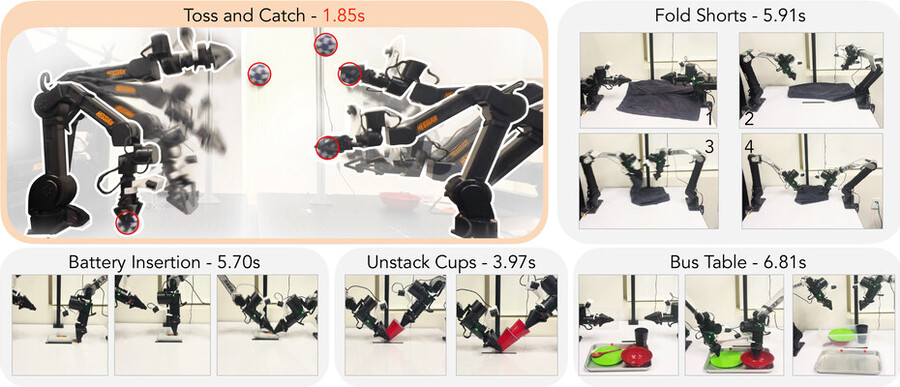
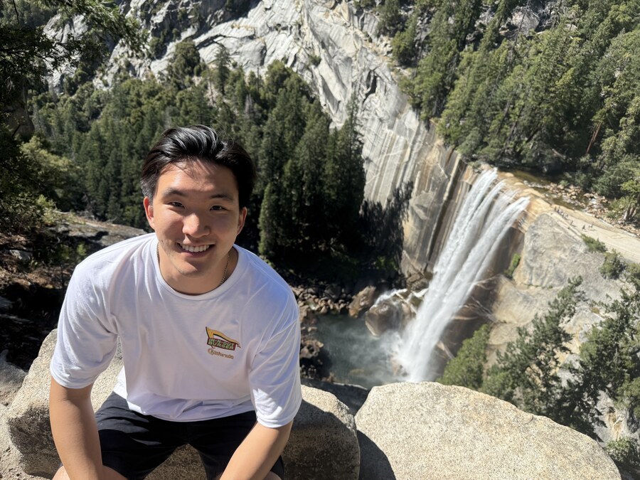

ALOHA Lightning: Learning Fast and Precise Manipulation
ICRA 2025
A full-stack system for learning fast, precise bimanual manipulation from near-human-speed kinesthetic demonstrations.

CV | Email | Github | Google Scholar | LinkedIn
I am a visiting student researcher at the Stanford AI Lab, advised by Zipeng Fu and Chelsea Finn, and in the process of completing my Master's degree in Artificial Intelligence at the University of Amsterdam. Previously, I completed an integrated Master's degree in Mathematics and Computer Science at Imperial College London, advised by Jeroen Lamb.
I'm interested in high speed robot learning, dexterous manipulation, and practical solutions to accelerating robot learning research.

ICRA 2025
A full-stack system for learning fast, precise bimanual manipulation from near-human-speed kinesthetic demonstrations.